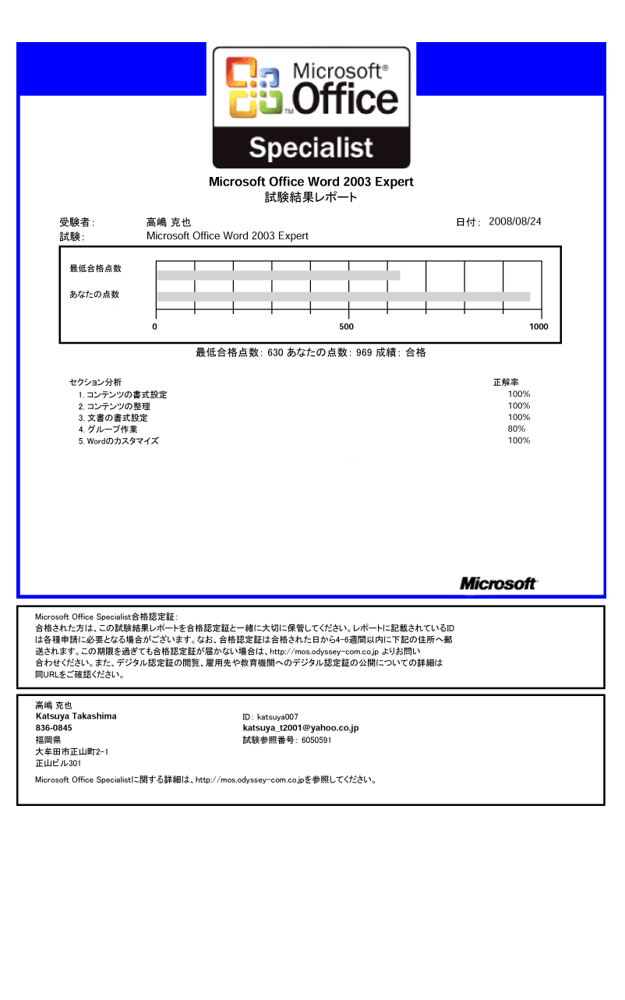
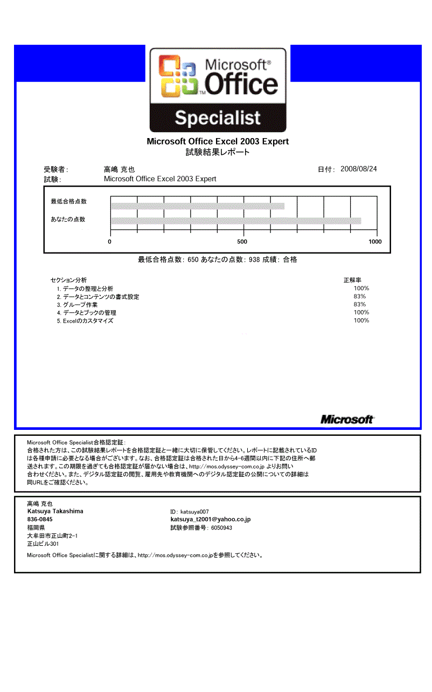
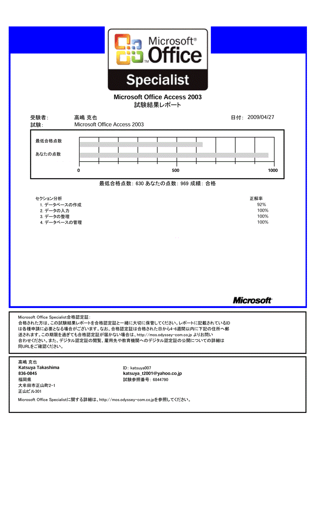
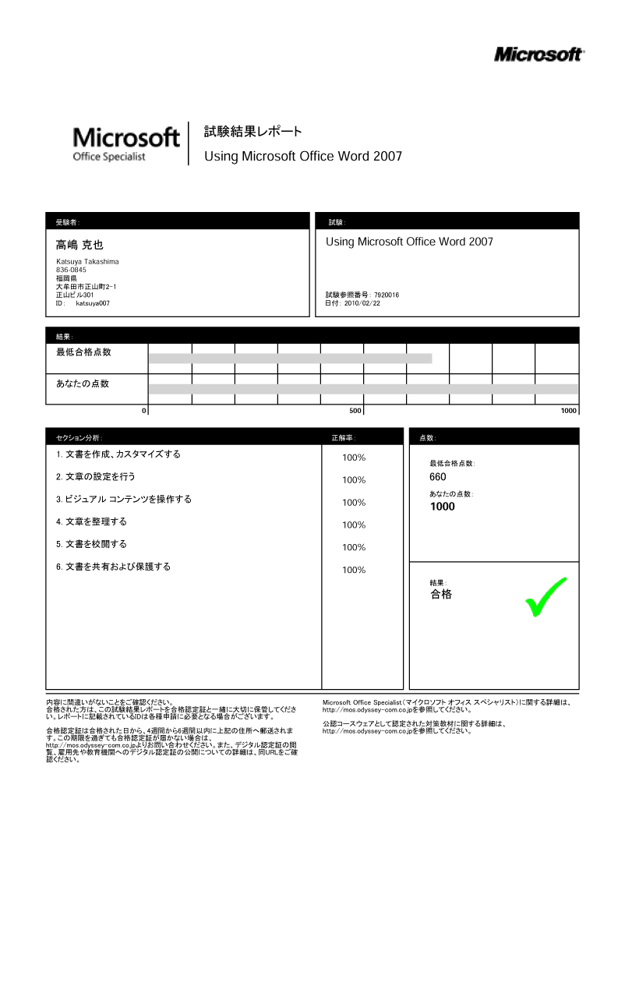
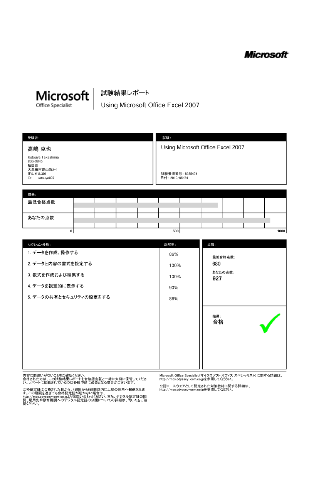
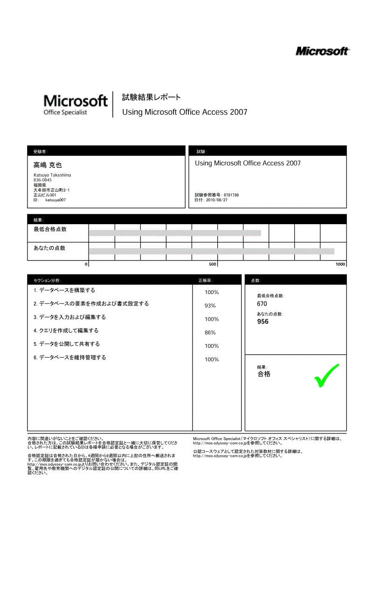
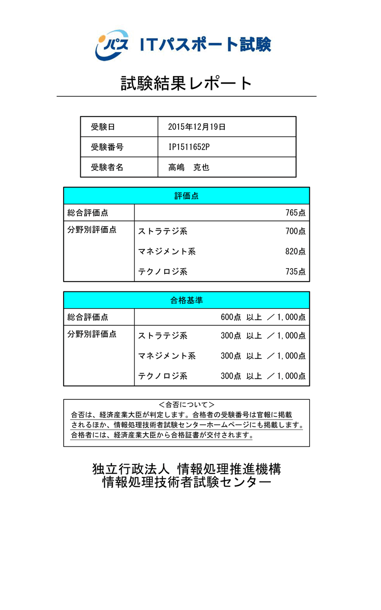

Katsuya Takashima
高嶋 克也
web design portfolio
こちらは、私「高嶋克也（たかしまかつや）」のポートフォリオページです。
webデザイン以外にも、PHPを使った動的サイト制作、画像素材の作成など、幅広く対応出来ることが特徴です。
今後はプログラミング関連も強化していく計画で、猛スピードで学習中です。
p
o
r
t
f
o
l
i
o
Top Page
学歴・職歴
- 1988年04月～1991年03月（３年間）
福岡県立三池工業高等学校 情報電子科 卒業 - ＜学習内容＞
プログラミングの基礎（言語：Basic、Fortran、COBOL）、アルゴリズム、ハードウェア基礎、２進数計算、論理回路、三相交流電源、 - 1991年04月～1998年05月（７年１カ月）
株式会社東芝 東京システムセンター - 官公庁向けシステム開発部署に所属し、COBOL言語プログラマ、詳細設計、詳細テストを担当。
- 1999年01月～2010年12月（１１年）
有限会社九州アカデミー学院 - 職業訓練校の講師及び、Web制作事業も担当。
＜講師としての担当＞Microsoft Office Word,Excel,Powerpoint、Homepageビルダー、PhotoshopElementsなど「OAビジネス初級科」の講師を担当。
＜Web制作事業で実績＞Dreamweaverを使っての制作、他PHPプログラムを使用した「懸賞サイト（ガラケー向け）」の制作等を受注し、制作いたしました。
詳細は作品集の項を参照 - 2011年11月～2015年11月（４年１カ月）
株式会社マルエイ - 熊本県玉名市を中心にスーパーマーケット17店舗を展開する本部勤務
webサイト管理、運営、更新
業務改善システムの提案、現場意見の収集、操作指導
実績：EOS/EDIシステム、現金有高収支報告システム
資格
- 1991年03月
普通自動車運転免許 - ゴールド免許で、ミッション車、中型も可能です。
- 2004年12月
ＣＳ検定 ２級表計算技士 - 実施機関：中央職業能力開発協会
>コンピュータサービス技能評価試験 Excelの表計算技術の実技資格。IFネスト、条件付き書式等。 - 2008年08月
MicrosoftOfficeWord2003expert - 
- 2008年08月
MicrosoftOfficeExcel2003expert - 
- 2009年04月
MicrosoftOfficeAccess2003 - 
- 2010年02月
MicrosoftOfficeWord2007 - 
- 2010年05月
MicrosoftOfficeExcel2007 - 
- 2010年08月
MicrosoftOfficeAccess2007 - 
- 2012年02月
日商簿記３級 - 実施機関：日本商工会議所
- 2015年12月
ITパスポート - 
- 2016年01月
Webクリエイター能力認定試験expert（取得予定） - 実施機関：サーティファイ
- 2016年02月頃
PHP5技術者認定試験（取得計画中） - 実施機関：一般社団法人PHP技術者認定機構
- 2016年03月頃
JavaプログラマSilverSE8（取得計画中） - 実施機関：オラクル
スキル
- HTLM5★★★★☆
- ver.4のtableレイアウトで組んでいた時期が永く、前職でもwebは兼務であったため、時代に取り残されておりましたが、猛スピードで学習し追いついたところです。
- CSS3★★★★☆
- HTML5の欄でも申し上げた理由で、最近の技術を使った作品が少ないのが悔しいところ。直近の作品で評価して頂ければと思います。
- Javascript★★★★☆
- webサイト制作を始めた当初から扱っておりましたが、最近ではjQueryを操作するための補助的意味合いが強くなってきたように思えます。
- jQuuery★★★☆☆
- こちらも最近になって習得しましたが、元々がプログラマですので、貪欲に吸収していってます。
- PHP★★★★☆
- ver.4の時代に、「懸賞サイト」「メルマガ読者獲得サイト」等を作成し、MySQL、セッション、会員登録フォーム、 /]csvダウンロード、自前でのアクセス解析など組んでおりましたが、ver.5の新機能は未習得。ですので、優先順位の高い学習課題に挙げており、PHP5技術者認定初級試験の取得を計画しております。
- JAVA★☆☆☆☆
- 汎用性の高い言語で、webやandroidアプリなどでの需要も高いと思い、PHP5の次に資格取得を計画しております。オラクル認定 JavaプログラマSilverSE8を目指しております。
- perl★☆☆☆☆
- PHPに比べると古い言語ですが、開発の職に就けばメンテナンスの機会もあると考え、学習中です。
- Photoshop★★★★☆
- 以前のバージョンは使用経験はあります。自宅にはElementsバージョンを持っており、web作品の素材作成、写真加工に活躍してます。
- Illustrator★★★★☆
- ver.9の時代に使用しておりました。直線、曲線の描画、図形の合成、切り抜き、スキャン画像のトレース等はお手のものです。
- Dreamweaber★★★☆☆
- ver.3の時代に使用しておりました。今ではタグ打ちした方がcssやjQueryと親和性は高いと感じております。
- Fireworks★★★☆☆
- ver.3の時代に使用しておりました。最近まで使っており、ナビメニューの素材作成で活用しておりました。
作品
- AQUASPOT
-
観賞魚水槽のリース・メンテナンスをされてる会社
jQuery&レスポンシブ初挑戦で、特に実績紹介ページのスライドショーは苦労しました。
PHPを使ってサムネイル画像とJSONデータを生成し、サムネイル一覧とスライドショーに利用しています。 - ヘアーサロン・ピカソ
- 制作実績作りの為、知人の店に協力していただき、無償で作成しております。
制作に向けて、取材・打ち合わせを行っているところで、完成まで今しばらくお待ちください。 - PHP実装サイト：Excelによるページ更新システム
- Excelを使って特定のページを更新するシステムです。Excel表を配列として読込、htmlファイルを保存するシステムです。
こちらのPDFでも図解説明しておりますので、ご覧ください
システム解説図
- PHP実装サイト：定時更新予約システム
- スーパーマーケット17店舗のチラシ画像ページ、以前は手動で更新しておりました。
折り込み日前日１８時に更新したい、店舗によってＡパターンのチラシ、Ｂパターンのチラシなどに分かれており、手動での更新が困難になったため、PHPでプログラムを作成しました。
事前に更新予約する事で自動更新されます。
店舗とチラシの関連付けは、事前に作成した一覧ファイルを読み込んで、振り分けてます。
システム解説図 - PHP実装サイト：メルマガ読者獲得サービス
- メールマガジンの発行者は、読者数を増やしたいとの要望があり、お得な情報を掲載したPDFファイルを提供する対価としてメルマガ登録を承諾していただく仕組みのサイトです。
※こちらのサイトは現存しておりません。
システム解説図 - PHP実装サイト：懸賞サイト（ガラケー版）
- ガラケーで懸賞応募が簡単にできるサイトです。
応募や、広告クリックでポイント付与され、一定量貯まると換金できます。
※こちらのサイトは現存しておりません。
システム解説図 - 株式会社やましょう不動産
-
売家、売地、貸地、テナント、分譲の情報を自社で更新したいとの案件でした。
上記「Excelによる更新システム」を実装し、対応いたしました。
トップページにFlash、問い合わせフォームにPHPを使用しています。 - 株式会社健康市場マルエイ
-
「Excelによるページ更新システム」で、店舗一覧、求人情報、月間カレンダーを更新できます。
モバイルサイトは、別ページで作成しておりますが、更新はこちらのページにも適用されます。 - 株式会社九州メッドサービス
-
問い合わせフォーム以外は、特にプログラムは使っておりませんが、既存サイトのリニューアルでしたので、画像素材の加工に力を入れました。
- 株式会社富士金属
-
問い合わせフォーム以外は、特にプログラムは使っておりませんが、画像素材が紙媒体しかなく、モアレを目立たなく仕上げるのに気を使いました。